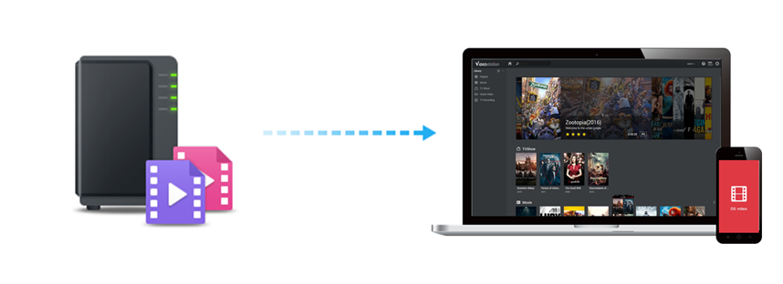
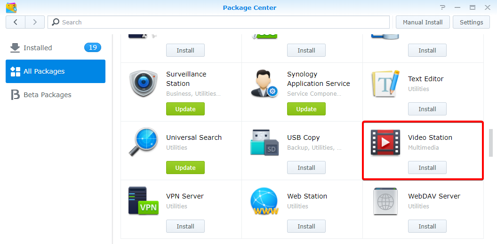
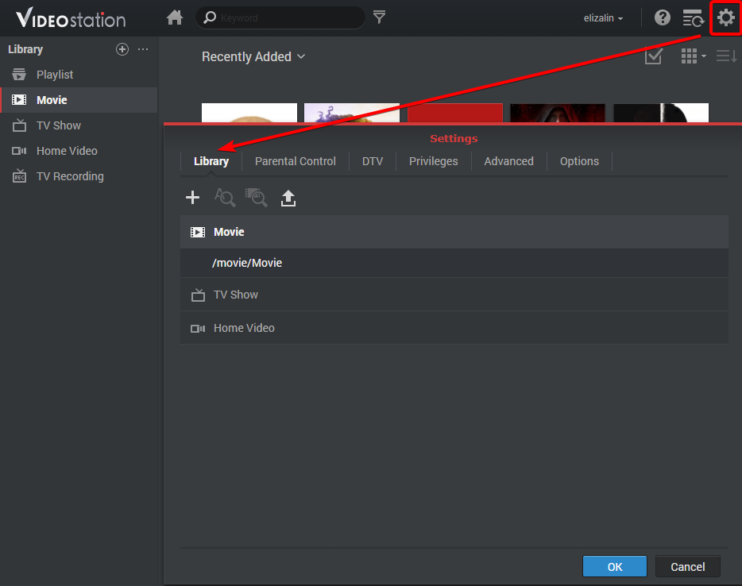
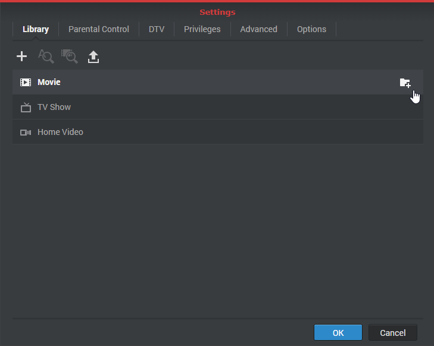
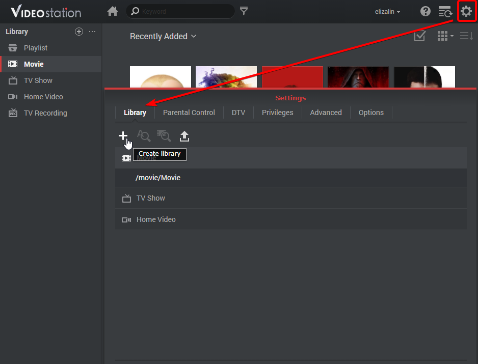
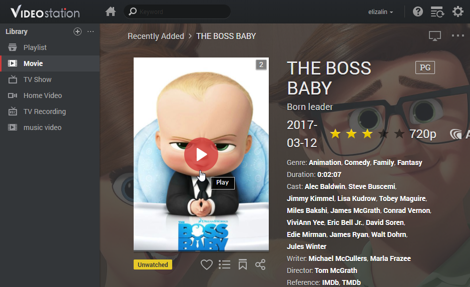
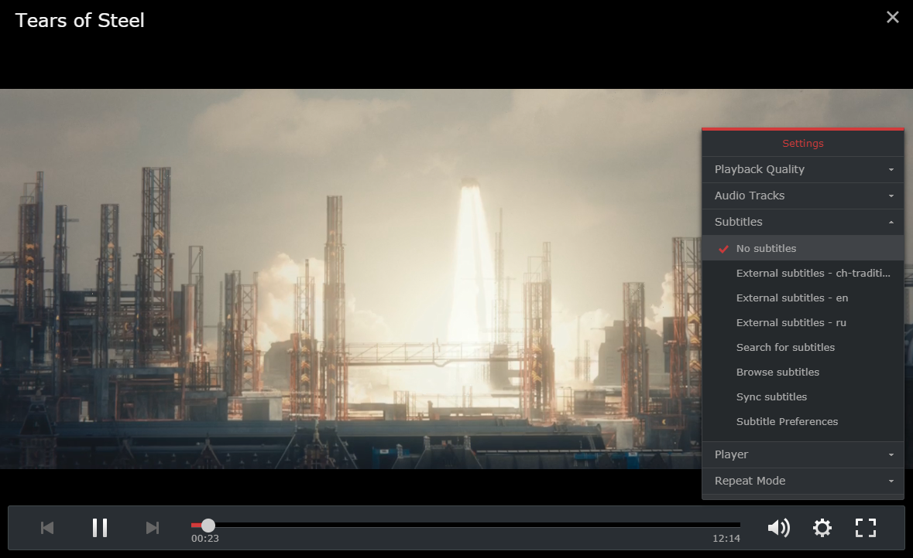
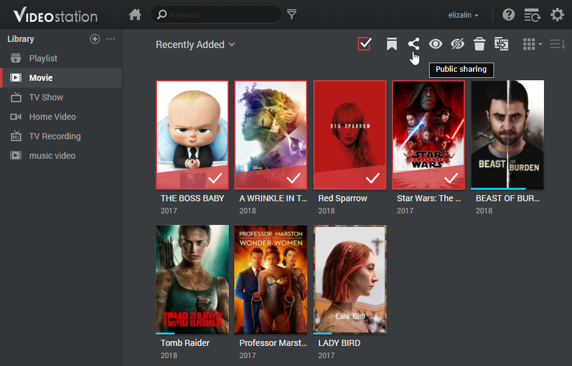
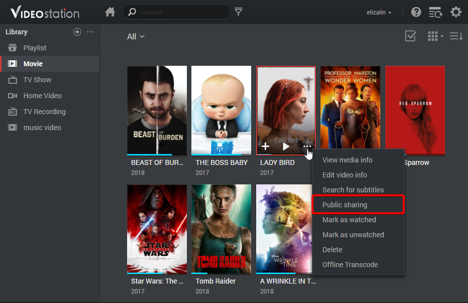

Overzicht
Met Video Station kunt u gemakkelijk uw videocollecties organiseren en categoriseren in verschillende standaard of aangepaste bibliotheken. Zo vindt u snel de gezochte video. Daarnaast kunt u met enkele klikken snel en gemakkelijk video's afspelen en delen.
1. Video Station installeren
Ga naar Package Center, zoek Video Station en klik vervolgens op Installeren om Video Station te installeren.

2. Video's in standaard bibliotheken opslaan en categoriseren
Video Station biedt drie standaard bibliotheken, zoals weergegeven in het linkerpaneel: Film/Tv-show/Zelfgemaakte video. Opdat uw video's correct worden geïndexeerd en gecategoriseerd, moet u eerst videomappen aan elke bibliotheek toevoegen en vervolgens uw bestanden in de desbetreffende videomappen opslaan. Er zijn standaard drie videomappen voor drie standaard bibliotheken gemaakt onder de gedeelde map video: Film, Tv-show en Zelfgemaakte video. Voer de onderstaande stappen uit om meer videomappen voor bibliotheken aan deze drie mappen toe te voegen.
Opmerking:
het systeem zal automatisch op het internet naar gerelateerde metagegevens en andere informatie (bijv. posterafbeelding) voor twee videotypes (movie and tv show) zoeken. We raden u aan dat de video's overeenkomen met het gespecificeerde videotype van de desbetreffende bibliotheken zodat uw video's met de juiste informatie worden gekoppeld.
Videomappen aan standaard bibliotheken toevoegen
- Ga naar Instellingen > Bibliotheek.

- Klik op het pictogram Map toevoegen om een map op uw Synology NAS en de doelbibliotheek te selecteren. U kunt tot 100 videomappen aan een bibliotheek toevoegen. Na het selecteren van een map is het niet mogelijk om dezelfde map of submappen voor een andere bibliotheek te selecteren.

- Sla videobestanden in de videomappen op om video's in desbetreffende bibliotheken te categoriseren.
- Nu kunt u uw video's in de bibliotheken doorbladeren en bekijken!
3. Video's in aangepaste bibliotheken opslaan en categoriseren
Naast de drie standaard bibliotheken, die standaard voor iedereen toegankelijk zijn, kunt u als DSM admin of een gebruiker van de groep administrators aangepaste bibliotheken maken en toegangsrechten aan gebruikers toewijzen.
Aangepaste bibliotheken maken
- Ga naar Instellingen > Bibliotheek en klik op het pluspictogram om een bibliotheek te maken.

- Geef de nieuwe bibliotheek een naam, selecteer welk type video's u in de map wilt plaatsen en selecteer vervolgens Openbaar wanneer u de bibliotheek voor iedereen toegankelijk wilt maken of op Privé om de toegang tot bepaalde gebruikers met machtigingen te beperken. Denk eraan dat de video's die u in de map plaatst overeen moeten komen met het geselecteerde videotype zodat de nauwkeurige verzameling van videoinformatie van het internet kan worden gegarandeerd.
- Selecteert u Privé, klik dan op Machtigingen toewijzen en schakel de selectievakjes in om gebruikers toegang te verlenen.
4. Video's afspelen
Na het categoriseren van uw videobestanden in verschillende bibliotheken kunt u met onderstaande stappen uw video's op Video Station afspelen. We raden u aan om eerst VLC media player (Windows, Linux) op uw computer te installeren. Naast het afspelen van video's op uw lokale computer kunt u uw video's streamen naar DLNA/UPnP-compatibele DMA's of AirPlay-compatibele apparaten en afspelen.
Video's met ingesloten Video Player afspelen
- Selecteer een videofragment dat u wilt afspelen en klik vervolgens op het afspeelpictogram in de videoafbeelding.

- De video wordt meteen afgespeeld. Is dit niet het geval, controleer dan of het videoformaat door uw webbrowser wordt ondersteund of dat de VLC-invoegtoepassing op uw computer is geïnstalleerd.
- Gebruik desgewenst de schermknoppen en de voortgangsbalk onderaan de Video Player. U kunt ook het volume aanpassen, de videoafspeelkwaliteit en audiotrack selecteren, ondertitels inschakelen of de video naar een ander apparaat (indien van toepassing) streamen.

Opmerking:
Voor gedetailleerde informatie over de VLC-invoegtoepassing en ondersteunde apparaten raadpleeg DSM Help > Video Station > Video afspelen.
5. Video's publiek delen
Met de publiek delen-functie kunt u gemakkelijk uw video's met andere personen delen via Video Station en alle gedeelde video's worden toegankelijk voor iederen met een koppeling.
Video's delen met anderen
- Ga naar een videobibliotheek en klik in de linkerbovenhoek op Alle om alle video's in deze bibliotheek te bekijken.
- Klik op het pictogram Selectiemodus en houd de knop Ctrl of Shift ingedrukt om meerdere video's te selecteren. Klik vervolgens op het pictogram Publiek delen.
- Hebt u alleen een video geselecteerd om te delen, dan wordt de video toegevoegd aan een gedeelde collectie met de naam Gedeelde video's. Hier kunt alle video's beheren die u een voor een hebt gedeeld.
- Als u meerdere video's om te delen hebt geselecteerd, worden de video's gegroepeerd in een nieuwe gedeelde collectie.

- Selecteer desgewenst een geldigheidsperiode.
- U kunt ook op het pictogram meer van de doelfilmafbeelding klikken en op Publiek delen om de geselecteerde video toe te voegen aan Gedeelde video's.

- Kopieer en plak de koppeling in e-mails, expresberichten en webpagina's om de video's te delen.
6. Video's op mobiele apparaten organiseren en bekijken
Om een verbinding te maken met Video Station via mobiele apparaten moet u DS video downloaden met iOS/Android-apparaten om zowel thuis als onderweg met onderstaande QR-codes video's af te spelen of collecties te organiseren op uw mobiele apparaten of video's te streamen naar uw DMA's of AirPlay-apparaten.